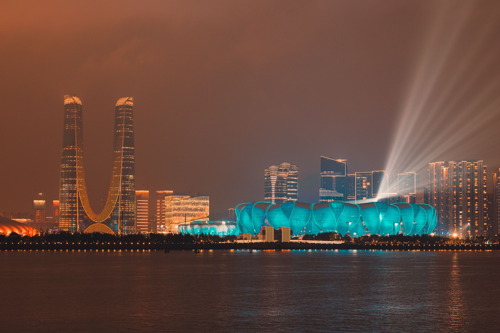

DESTINATION GUIDE

DESTINATION GUIDE
杭州以西湖、钱塘江与大运河勾勒出江南城市的从容，也是数字经济蓬勃发展的创新高地。作为长三角南翼的重要节点，萧山国际机场和高铁网络让这座山水名城便捷连接四方。
位于浙江北部、钱塘江下游，西湖与京杭大运河杭州段塑造了独特的山水与城市关系。
亚热带季风气候
四季分明、雨水充沛，春日温润多雨，盛夏炎热，秋季清爽，冬季湿冷。
隋唐以后，大运河带动城市发展；南宋建都临安，使杭州成为重要的文化与商业中心。
西湖文化、运河文化与茶文化彼此交织，也与现代城市生活相互映照。
景区与市区交通繁忙时宜预留时间；梅雨季可备好雨具。